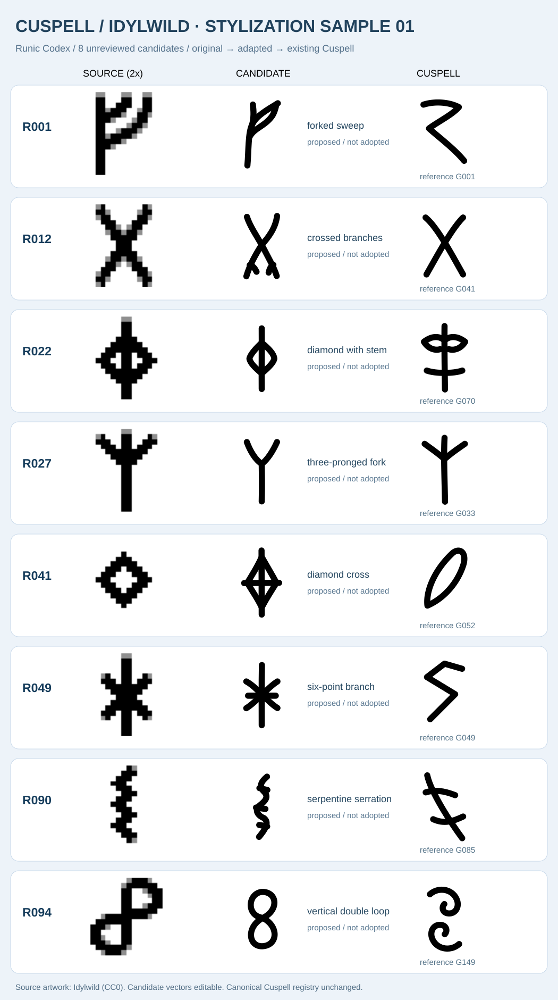
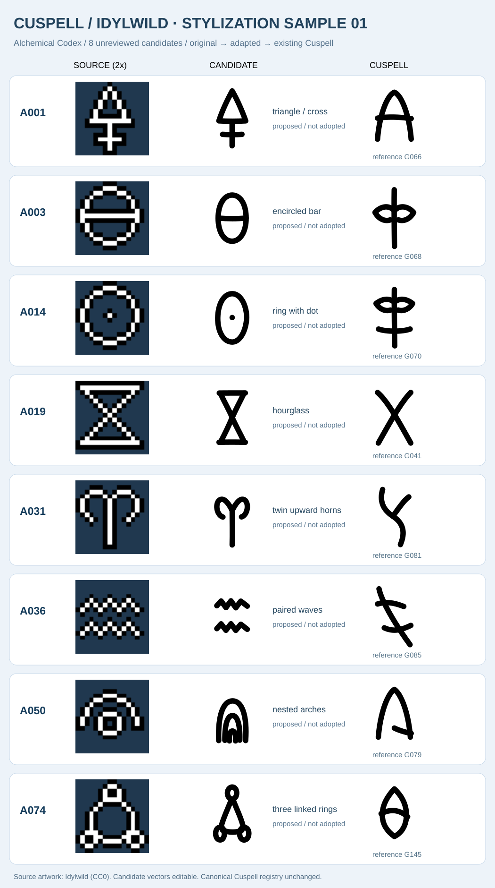

16 unreviewed redraws. Each panel compares the actual Idylwild pixel art on the left, a new Cuspell-style editable SVG in the center, and an unmodified canonical Cuspell SVG on the right. The reference Cuspell glyph is for visual context, not a meaning or replacement decision.
Runic Codex — 8 candidates

Alchemical Codex — 8 candidates

The originals remain preserved. No active glyphs or gameplay root mappings have changed. Source art: Idylwild, CC0.